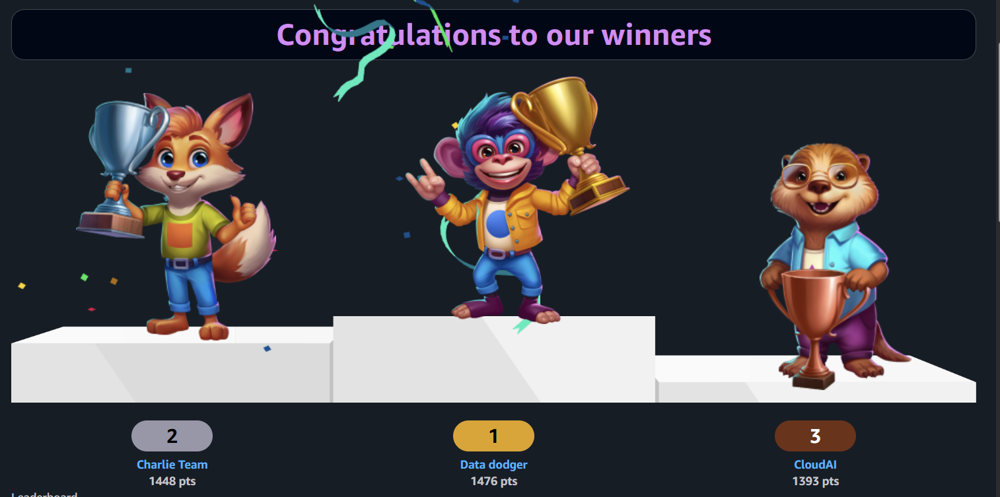
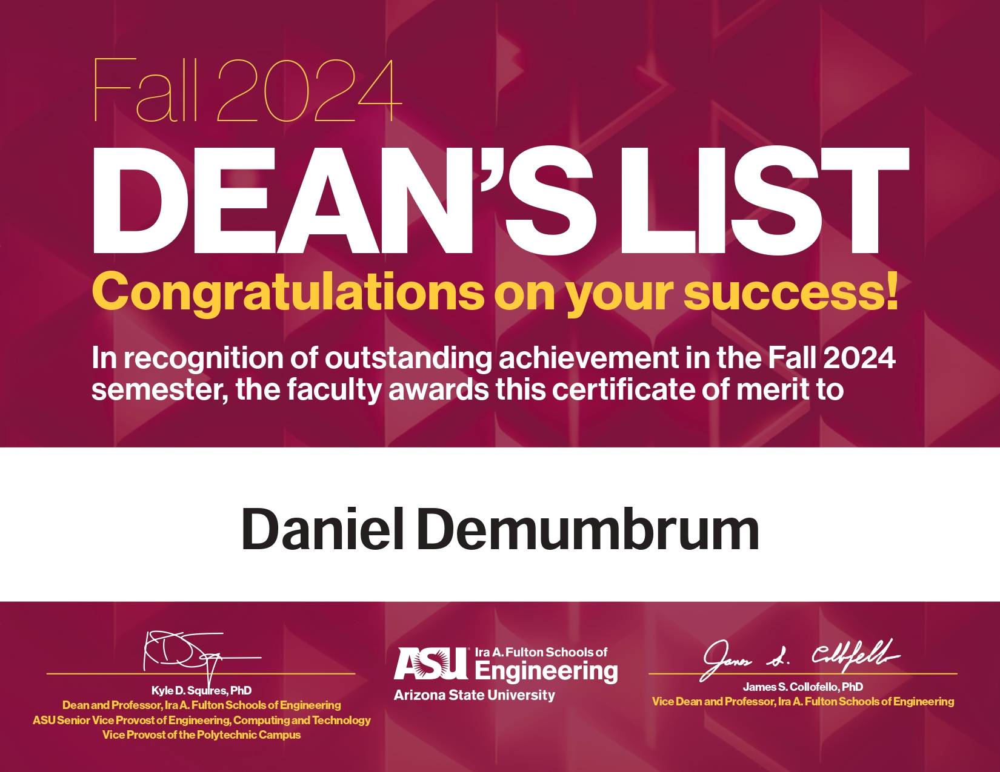

Motivated IT Student completing a B.S. in Information Technology at ASU (Dec 2025). Leveraging a 9-year background in customer-facing technical support and leadership, including 6 years at T-Mobile, where I developed foundational IT skills, troubleshooting consumer electronics (smartphones, tablets, 5G home internet), and establishing and refining a structured approach to problem-solving. Currently providing Tier-1 & Tier-2 Helpdesk support at ASU, managing incident tickets (ServiceNow), and resolving complex user issues in Windows, macOS, and Linux. Educational training in system configuration, network technology, cybersecurity fundamentals, and database administration provides a strong full-stack foundation for IT roles.
Education
Bachelor of Science, Information Technology - Arizona State University, Tempe, AZ
December 2025
Honors: Ira A. Fulton Schools of Engineering Dean's List (Fall 2024)
Awards: AWS Jam Fall 2025 – 2nd Place (out of 26 teams)


Certifications
Microsoft Certified: Azure Fundamentals (AZ-900)
Technical Skills
Operating Systems: Windows 10/11, macOS, Linux (Ubuntu).
Provide comprehensive Tier 1 and Tier 2 help desk support for a diverse user base of 450+ faculty, staff, and researchers via ServiceNow ticketing, phone, and walk-ins.
Diagnose and resolve hardware and software issues across Windows, macOS, and Linux environments, including fixing corrupt Linux desktop environments and driver conflicts.
Serve as the primary liaison with Dell Support to manage warranty claims and hardware repairs, including battery, keyboard, display, and motherboard replacements.
Troubleshoot peripheral connectivity, specifically resolving printer jams and mapping printers via Active Directory based on physical location and user groups.
Provide classroom technology support, troubleshooting Audio/Video systems and conferencing software (Zoom) to ensure instructional continuity.
System Administration & Networking
Manage user access and device configuration within Active Directory, including binding new machines to the domain and managing Group Policy adjustments.
Support server infrastructure by troubleshooting storage capacity, performing firmware/software updates, and diagnosing network connectivity issues.
Resolve remote access and connectivity tickets by troubleshooting VPN configurations and network interface settings.
Asset Lifecycle Management
Onboarding: Execute end-to-end provisioning for new hires, including asset tagging, deploying standard OS images (Windows via MTD server, macOS, Linux), and configuring OneDrive/SharePoint.
Offboarding: Retrieve hardware from departing staff, securely wipe hard drives, update inventory systems, and retire assets from Active Directory.
Retail Associate Manager - T-Mobile
10/2016 – 08/2022
Served as a technical resource for 6 years, troubleshooting a wide range of consumer electronics, including smartphones, tablets, and 5G Home Internet gateways.
Established and refined a structured troubleshooting methodology to isolate hardware versus network issues efficiently.
Delivered high-level customer service in a retail environment, translating complex technical issues into understandable terms for non-technical users.
Managed customer accounts and inventory, ensuring accurate record-keeping and issue resolution.